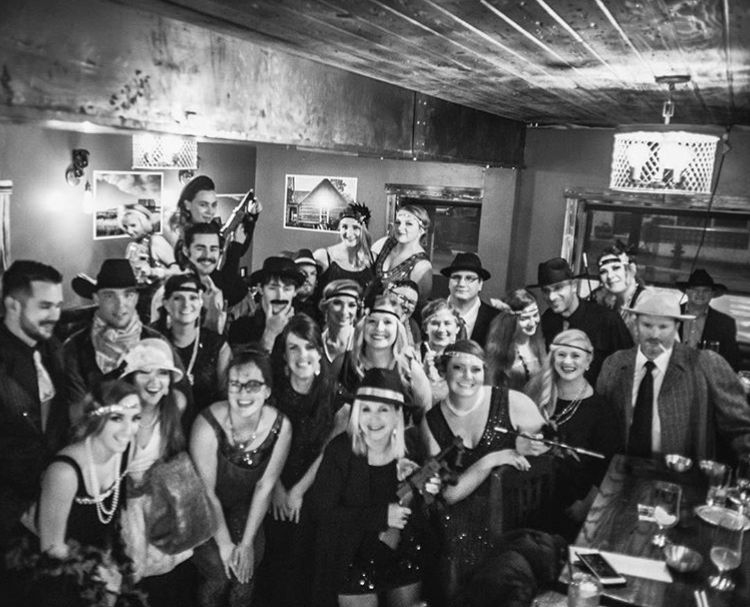

Let's Party like Gatsby!

The Jawbone is a brand new bar and restaurant in Central Montana. Our mission is to create an experience for every person that comes through the door. Whether you are just stopping in to look around, or have a private party, we want each person to feel something when they step into our door. Our goal is to get people to try new things and step out of their comfort zone. We offer a wide variety of food choices and specials which allows people to try something new every time they come in. Additionally, we have an extensive cocktail menu that caters to everyone's individual tastebuds.